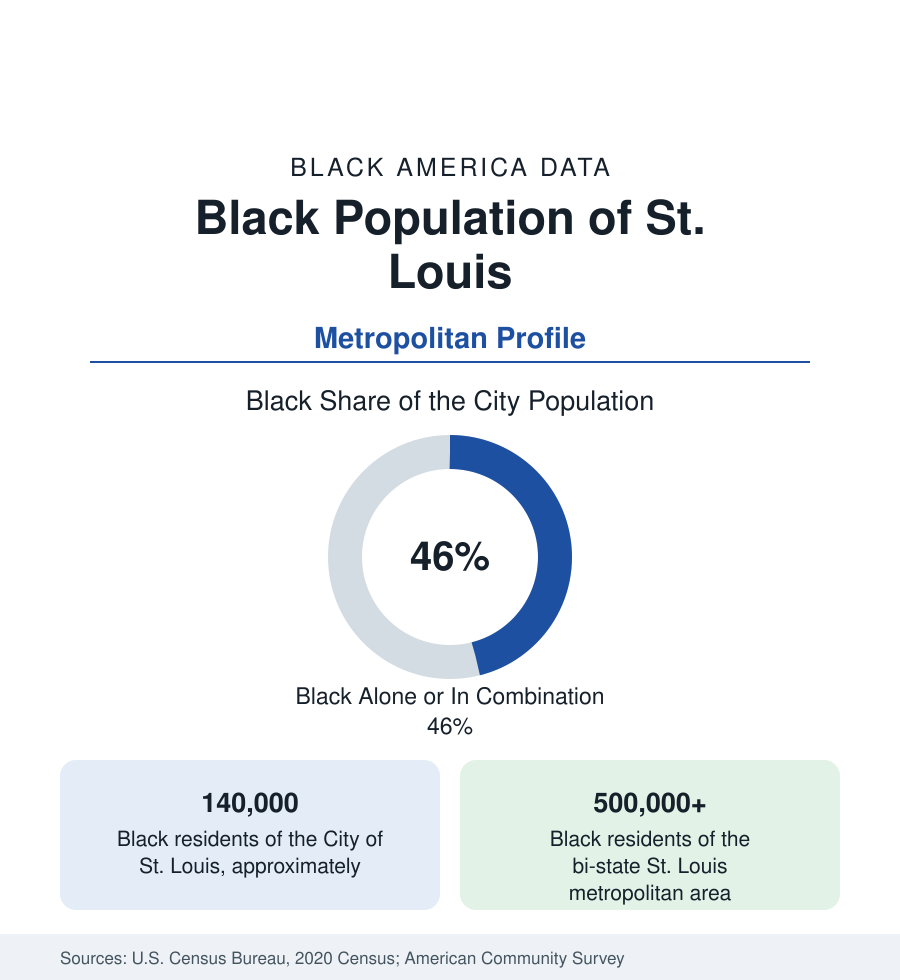

Black Cities
Black St. Louis: The Ville, the North Side, and the County
St. Louis holds about 140,000 Black residents in the city and more than half a million across the bi-state metro. The census profile.

St. Louis holds about 140,000 Black residents within its independent city — Black alone or in combination, more than two in five of its 302,000 people — and more than half a million across the bi-state metropolitan area, including East St. Louis on the Illinois shore. St. Louis was the great river gateway of Black migration: the steamboat and rail crossroads where the South's Black population funneled north and west. Its modern data record a city that has lost more than half its peak population, a Black community suburbanizing across the county line, and a north-south divide that is the region's organizing fact.
The Ville and the Making of Black St. Louis
The historic center is the Ville, in the city's northwest: a neighborhood built under segregation's constraints into a complete Black institutional world. Sumner High School, opened in 1875 as the first high school for Black students west of the Mississippi, educated generations of the region's Black professional class; Homer G. Phillips Hospital, opened in 1937, was for decades the largest Black hospital in America and trained hundreds of Black physicians and nurses; Stowe Teachers College, Antioch Baptist, and the district's businesses completed the enclave. Around it, Mill Creek Valley — a Black district of some twenty thousand residents adjoining downtown — was demolished in the urban renewal of the late 1950s, its population dispersed across the north side; the clearance remains the city's defining act of displacement in the historical record.
The North Side and the Delmar Divide
Modern Black St. Louis is the north side: the vast grid from the riverfront wards through Fairground, Penrose, Walnut Park, and Baden, majority Black across most of its extent, holding the city's largest Black population and its most difficult indicators — the tracts with the region's lowest incomes and highest vacancy. Delmar Boulevard, running east-west through the city's middle, is the famous shorthand for the divide: the neighborhoods north of it are overwhelmingly Black and disinvested; those south of it, whiter and wealthier, in a pattern so consistent that the street's name functions in the literature as a measurement. South St. Louis holds smaller Black communities in its mixed districts, and the city's overall Black share — more than two in five — blends a north side that is a Black city unto itself with a south side where Black residents are a modest minority.
The County: North County's Transformation
The metropolitan story is suburbanization at scale. St. Louis County's northern municipalities — Ferguson, Florissant, Hazelwood, Spanish Lake, Jennings, Berkeley, and University City at the city's edge — received the city's Black outflow across the late twentieth century, transforming from nearly all-White suburbs to substantially or majority Black communities within a generation, at every income level from working-class apartment corridors to stable homeowner districts. The county's Black population now exceeds the city's. West County and South County record smaller shares. Across the river, East St. Louis — more than nine-tenths Black, profiled in the Illinois account — and the Metro East suburbs complete a bi-state Black population above half a million, the largest in the interior between Chicago and Texas.
Economy and Institutions
The employment base runs on health care (BJC HealthCare, anchored at the Central West End medical center, is the region's largest employer), the universities — Washington University, Saint Louis University, and Harris-Stowe State University, the city's public HBCU — and the public sector. The data beneath the institutions are hard: Black St. Louis's poverty rates, in both city and inner county, rank at the difficult end of this section's metros, and the health data for the north side's districts — life expectancy differences of well over a decade across the Delmar line in the published tract analyses — are among the starkest intra-urban gaps in the national literature.
Reading the St. Louis Numbers
St. Louis is the profile where the metropolitan frame matters most: a city of 140,000 Black residents inside a Black metropolis of more than half a million, in a political geography — an independent city severed from its county since the nineteenth century — that splits the population's data across jurisdictions. Read the region whole, as its people live it, and use the city figure only with its boundary in mind.
More in Black Cities
Black Atlanta: Population, Distribution, and Growth of a Black Metropolis
Metro Atlanta holds more than two million Black residents — roughly one in three, second only to New York. The suburban distribution, migration history, and composition of Black Atlanta in the census data.
Black New York: The Largest Black Population in America
The New York metropolitan area holds about 3.4 million Black residents — more than any metro in the nation — and the city itself about two million. The census profile.
Black Washington: The District and the Metro
The Washington metro holds about 1.6 million Black residents, and the District itself — long a majority-Black city — now records a Black share near 41 percent. The census profile.
Source: U.S. Census Bureau, 2020 Census; American Community Survey; Population Estimates Program.